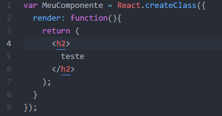
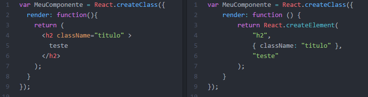
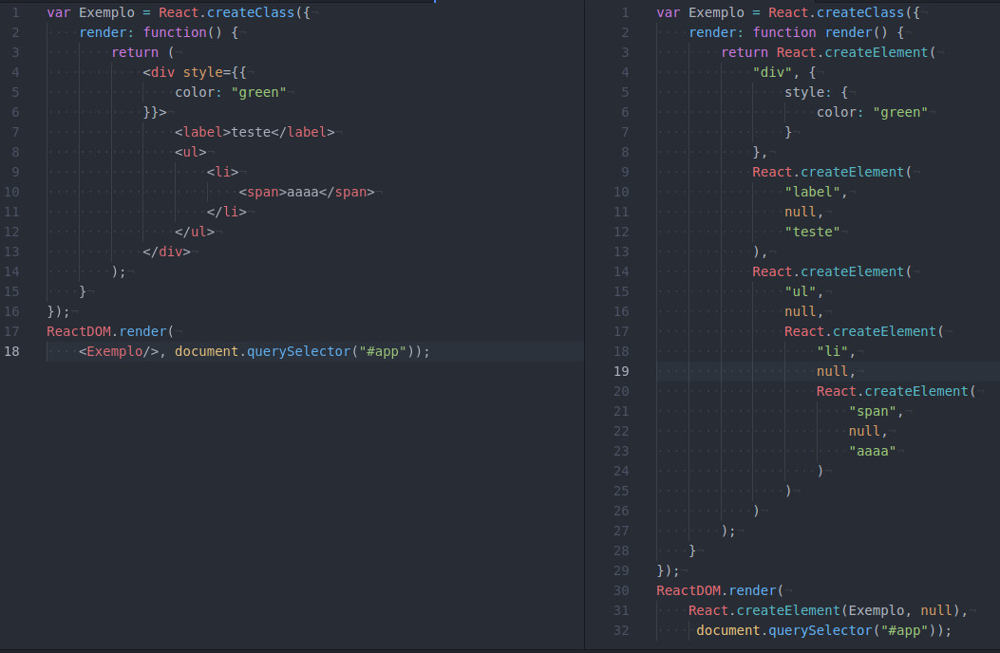

Introdução ao React
Aprendendo sobre React JS - A biblioteca do Facebook
Instrutor: Leonardo Lana
Realização: Goomer
A Goomer nasceu para ser agente e companheira da evolução dos restaurantes. Acreditamos que a tecnologia não substitui, mas potencializa o trabalho humano.
Redes Sociais
Nos acompanhe nas redes sociais!
Facebook -
Medium -
Twitter -
Instrutor

- Nome: Leonardo Lana
- Idade: 27 anos
- Minibio: Engenheiro de Software e Agilista na Goomer e eterno estudante.
Redes Sociais
Acompanhe o instrutor nas redes sociais!
Facebook -
Medium -
Twitter -
LinkedIn
Requisitos
- Node (versão > 6 LTS)
- npm (versão > 3.x)
- create-react-app
- Editor de texto
Aprender JavaScript
Bibliotecas/Frameworks JavaScript estão sempre surgindo, então antes de tudo você deve aprender JavaScript de verdade!!!
- Não se limitar ao que aprendeu na faculdade ou no trabalho
- Não se limitar ao que aprendeu na faculdade ou no trabalho
- Ler Livros/artigos/blogs especializados
- Seguir/aprender padrões desenvolvimento
- Acompanhar a comunidade JavaScript
- Estudar/Ler os repositórios no GitHub de projetos JavaScript
- Participe de grupos JavaScript
- Pratique - Escreva Código
Conhecendo React.js
React é uma biblioteca open-source desenvolvida pelo Facebook, para construção de interfaces(Componentes) em JavaScript com alta performance que permite composição e modularização de uma maneira muito simples.
Conhecendo React.js
- Versão atual: 16.X
- Criada por: Jordan Walke, engenheiro do Facebook
- Primeiro release: Maio de 2013 na JSConf US
- Utilizado por grandes empresas: Facebook, Instagram, Netflix, Sony etc...
- Criação de interfaces com JavaScript
- Interface reflete o estado da aplicação
- Criação de componentes reutilizáveis de forma declarativa, modular e de fácil composição
- Alta performance
- Padronização de desenvolvimento
- Fácil manutenção
- Permite renderização no servidor - bom para SEO
- Ecossistema moderno de desenvolvimento (Node, npm, babel, webpack, gulp etc... )
- Taxa de adoção crescendo muito rápida pela comunidade JavaScript
- Tudo é JavaScript
Mas pra que serve?
O React foi desenvolvido com a seguinte missão:
"Como construir grandes aplicações com muitos dados que mudam frequentemente?"
- Focar somente na View
- Utilizar o Virtual DOM
- Trabalhar com componentes
Legal, mas... Como tudo isso funciona?
Como já dizia o Jack Estripador:
“Vamos por Partes”
Estrututa básica de um componente
Antes de começar abra sua mente para alguns conceitos um pouco difícies de aceitar no começo ...
Empty your mind...
Estrututa básica de um componente

JSX
HTML dentro do JavaScript, como assim?

JSX
JSX
JSX
- Opcional
- É um XML para facilitar a criação dos componentes
- É convertido para JavaScript
- Parece HTML, mas possui algumas regras diferentes
- todas tags devem ser fechadas
- atributos são case-sensitive: maxLength
- class fica: className
- for fica: htmlFor
- style recebe um objeto literal:
<h1 style={{color: "red"}}>
JSX
As expressões javascript são avaliadas entre { }
JSX
Exemplo de iteração
Conceitos do React.js
- Virtual DOM
- Props -
this.props - State -
this.state
Entendendo o Virtual DOM
O Virtual DOM é uma representação leve em memória do DOM.
A cada mudança de estado o React renderiza o componente novamente, mas para uma melhor performance ele utiliza
o virtual DOM.
A cada mudança de estado:
- Cria uma nova árvore virtual DOM
- Faz um diff com a virtual DOM antiga
- Atualiza a árvore DOM nativa somente onde ocorreu alguma mudança
State e Props
Através das propriedades que componentes passam dados para seus filhos. (
this.props).
Props devem ser
read-only.
Componentes podem ter estados para gerenciar alguma lógica interna (
this.state). Somente use
this.setState para atualizar um estado. Toda vez* que atualiza o estado o
render é chamado.
Composição
Através da composição podemos montar componentes complexos que são divididos em componentes menores e mais simples.
this.props.children
Fazendo Build do React.js
- gulp
- webpack
Exercício 1
Objetivo
Criar um aplicativo com o create-react-app
- Abrir o terminal
- Escolher um diretório
- Executar o comando
create-react-app nome_do_projeto - Fazer networking enquanto ele cria o seu projeto =)
- Abrir o projeto no seu editor de texto
- Voltar ao terminal e subir o projeto com o comando
npm start - Alterar a mensagem para “O curso de React é demais”
create-react-app
O create-react-app é um pacote que nos permite criar aplicações web utilizando o React sem a necessidade fazer qualquer configuração. Todas as ferramentas necessárias para desenvolvimento e deploy já estão embutidas.
Alguns dos plugins já configurados:
Estrutura do Projeto
| Arquivo | Descrição |
|---|---|
| README.md | Arquivo de orientações do create-react-app. Está em inglês. |
| node_modules/ | Todas as dependências necessárias para o projeto. |
| package.json | Arquivo de descrição do projeto. Possui informações como o nome, autor, versão e as dependências. |
| public/ | Diretório que possui os arquivos públicos do seu projeto. Contém o html inicial. |
| src/ | Pasta onde está contido todos os recursos do projeto, arquivos de imagem, css, javascript e afins. |
Componentes Padrões
Para que o desenvolvedor não comece a desenvolver os componentes do zero, o projeto padrão já vem criado com alguns componentes para inspirar e servir como exemplo:
- App.css
- App.js
- App.test.js
- index.css
- index.js
- logo.svg

Package.json
O package.json é o arquivo que descreve a sua aplicação. Ele contém informações importantes, como o nome do projeto, autor, data, versão, e-mail e a declaração de suas dependências.
{
"dependencies": {
"react": "^15.5.4",
"react-dom": "^15.5.4"
},
"scripts": {
"start": "react-scripts start",
"build": "react-scripts build",
"test": "react-scripts test --env=jsdom",
"eject": "react-scripts eject"
}
}
Comandos npm
| Comando | O que faz? | Resultado |
|---|---|---|
| start | Inicia o servidor de desenvolvimento | Na porta 3000 e abre o navegador automaticamente |
| test | Inicia a execução dos testes | Executa os testes utilizando o Jest e exibe os resultados no próprio console |
| run build | Reúne o aplicativo em arquivos estáticos para produção | Compila, traduz, minifica os recursos da aplicação e gera arquivos estáticos |
| run eject | Remove a dependência do “react-scripts” e copia explicitamente as ferramentas de build, configurações e scripts dentro do diretório da aplicação | Remove a dependência do “react-scripts” e deixa tudo manual para controle do desenvolvedor |
Exercício 2
Objetivo
Criar um novo componente na aplicação
- Criar um novo arquivo javascript
- Usar a estrutura do App.js para montar um novo Componente
- Inserir o novo componente dentro do App
- Exibir com sucesso na tela o novo Componente
Ciclo de vida de um Componente
-
componentWillMount():
é chamado antes de ser inserido no DOM
-
componentDidMount():
é chamado depois de ser inserido no DOM
-
componentWillUnmount():
é chamado antes de ser removido do DOM
-
componentWillReceiveProps():
é chamado quando recebe uma propriedade
-
shouldComponentUpdate():
podemos impedir o render() caso retornefalseno shouldComponentUpdate()
-
componentWillUpdate():
é chamado antes do render() (mudança de state/props)
-
componentDidUpdate():
é chamado depois do render()
Eventos
React tem um controle interno de eventos e só delega evento DOM na raiz da árvore de componentes, depois os eventos são gerenciados
pelo próprio React.
Os nomes dos eventos são lowerCamelCase:
onClick, onChange, onTouchStart
Refs
Utilizado para acessar diretamente o elemento, por exemplo um elemento DOM ou instância de um componente.
Comunicação entre componentes pai/filho
Podemos passar aos descendentes funções callback para passar dados ao pai quando forem axecutadas pelo filho.
Usando React junto com outras libs
Para ter certeza que o componente estará no DOM quando for utilizar alguma outra lib, devemos usar o evento componentDidMount()
Exemplo de Form - componentes controlavéis
SPA - Single Page Application
São aplicações que carregam apenas uma vez a estrutura inicial e depois todas as outras ações/requisições/navegações são
feitas via ajax.
Exemplos: Facebook, Gmail
Rotas no React.js
Para Rotas é possível utilizar o React-Router https://github.com/reactjs/react-router
Renderização de componentes no servidor
Os componentes React podem ser renderizados no servidor.
Node, Java, .NET, php etc...
Arquitetura de desenvolvimento Flux

Arquitetura de desenvolvimento Flux
Desenvolvimento de uma aplicação de exemplo utilizando React.js
prática...
Quem utiliza React?
Grandes aplicações como Facebook, Instagram, WhatsApp Web, NetFlix,Yahoo Mail, Khan Academy, FlipBoard, BBC, Periscope Web,
dentre outras, já utilizam React.js.
No Brasil algumas empresas já estão com algum produto com React, por exemplo: "Globo Play" e algumas partes do
"portal G1" da Rede Globo
Componentes React
Há três tipos de componentes React
- React.createClass
- Componentes de classe
- Componentes sem estado
Componentes de classe
Todo componente precisa de 3 coisas:
- importar o módulo React e o Component (classes)
- estender o Component
- ter o método render() que retorna o HTML que deve ser renderizado
HTML no JavaScript
A sintaxe do JSX nos permite escrever o HTML no JavaScript!
class App extends Component {
render() {
return (

Welcome to React
To get started, edit src/App.js and save to reload.
);
}
}
ReactDOM
O ReactDOM é o responsável por fazer a ponte entre o React e o HTML
import React from 'react';
import ReactDOM from 'react-dom';
import './index.css';
import App from './App';
import registerServiceWorker from './registerServiceWorker';
ReactDOM.render(Só preciso disso?
Sim. Este é o mínimo necessário para se criar um Componente. Para componentes mais complexos, utilizamos Estados (States) e Propriedades (Props).
Propriedades
As propriedades são simples atributos que passamos para nossos componentes!
class App extends Component {
render() {
return (
Propriedades
No componente em questão, podemos acessar esta propriedade e usá-la!
class Espelho extends Component {
render() {
return (
{this.props.texto}
);
}
}
Estados
Estados guardam informações sobre o seu componente durante um período
Como por exemplo em um componente de relógio: para cada segundo você precisa atualizar o seu estado para poder mostrar a informação correta na tela
DEMO
Como usar os estados para atualizar um texto de acordo com o input do usuário
Estados
Toda vez que apertamos o botão, alteramos o estado do componente e o
render é invocado automaticamente
class App extends Component {
constructor(props) {
super(props);
this.state = {
input: ''
}
}
render() {
return (
Welcome to React
To get started, edit src/App.js and save to reload.
this.setState({input: event.target.value})} />
Resumo
- Estados e Propriedades não são obrigatórios mas ajudam a criar componentes mais inteligentes
-
Propriedades são atributos que passamos para os componentes e acessíveis por meio do
this.props.nomeDaPropriedade -
Estados guardam informações sobre um momento específico do componente. É setado no construtor do componente
e atualizado por meio do método
setState. Suas informações são acessíveis por meio dothis.state.nomePropriedade
Extra
Como podemos deixar o texto do componente Espelho azul?
Inline Styles
Os componentes React utilizam atributos bem semelhantes ao que já estamos acostumados, mas são ligeiramente diferentes. No React os atributos são por padrão CamelCase . Por exemplo:
- background-color → backgroundColor
- background-image → backgroundImage
- allowfullscreen → allowFullScreen
class Espelho extends Component {
render() {
return (
{this.props.texto}
)
}
}
export default Espelho;
O que vimos?
- Como criar um projeto do zero React do zero
- Subir o projeto para desenvolvimento
- Criar um novo Componente
- Incluir um Componente dentro do outro
- Passar propriedades de um Componente para outro
- Mudar o estado de um Componente
Próximos Passos
Agora que você já conhece o básico do React, é importante continuar estudando
- Ciclo de vida
- Como lidar com eventos
- Renderização condicional
Projeto Final
Objetivo
Criar uma página pessoal utilizando o create-react-app
Exemplo
Requisitos
- A página deve conter pelo menos uma imagem
- Deve conter pelo menos 3 componentes (além do App.js)
Desafio
Criar a página de forma responsiva utilizando o React Bootstrap